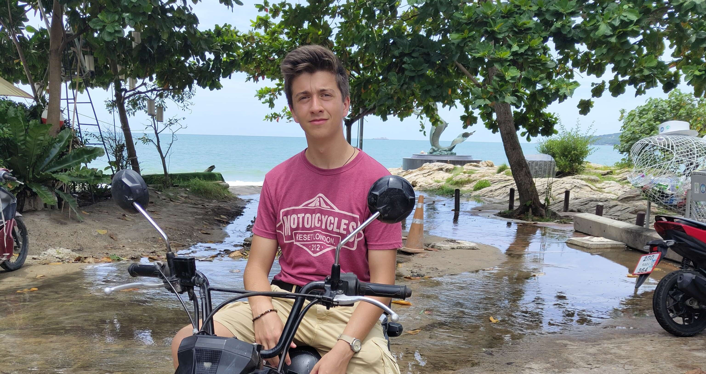
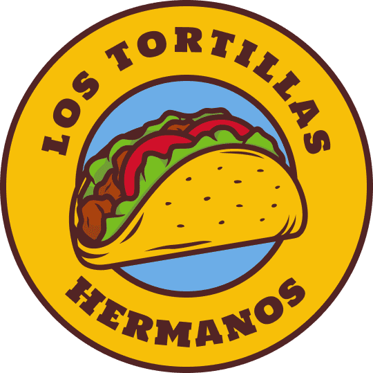
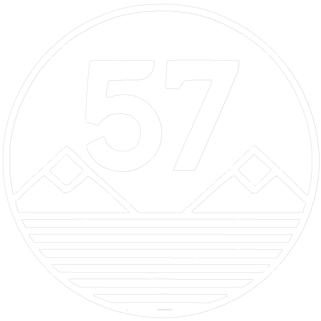
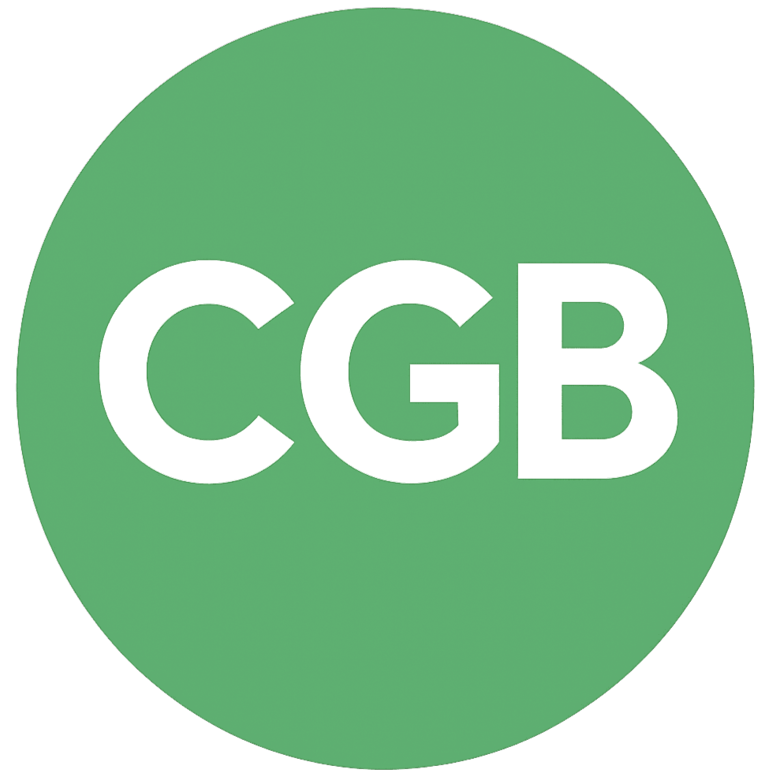
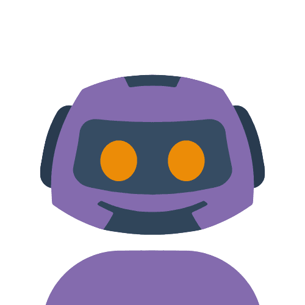
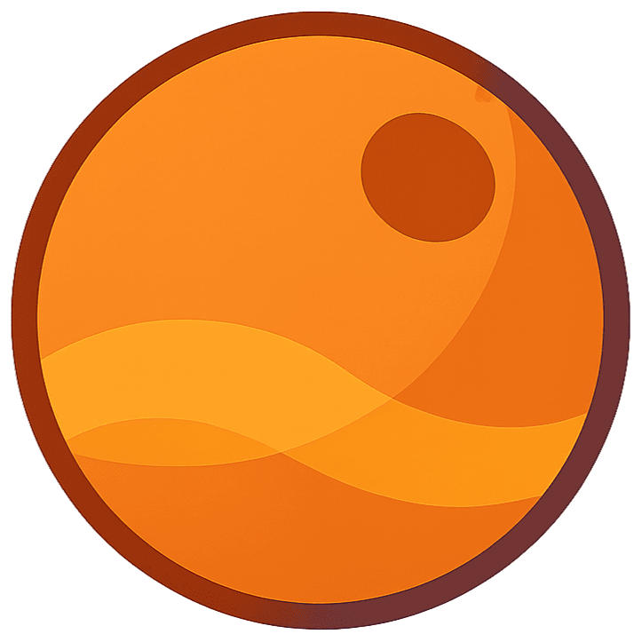
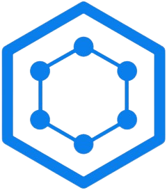

GILABERT THEO JOURNEY LOADING
WEB & GAME DEVELOPER
20Y

Hi 👋 I’m GILABERT Theo, a developer from La Ciotat, France.
Since I was a kid, I’ve always been into computers and tech. I really got into programming
during high school, teaching myself the basics through personal projects — like building an
MVC site in PHP from scratch, or creating bots in Python.
After graduating from my Bac Pro SN RISC with
"Mention Très Bien", I dived into one of my
favorite fields: 3D game development with Unity (C#). That passion stuck with me, and I kept
honing my skills in game dev throughout my studies.
Naturally, I pursued a BTS SIO option SLAM to
deepen my knowledge in software development. During those two years, I continued
working on Unity projects in my free time, which helped me get even more comfortable with
game development and C#. I also discovered three.js, which opened the door to building
interactive web experiences — including the one you’re currently browsing.
Today, I’m looking for new opportunities —
whether it’s an internship, a mission, or a collaboration — to put my skills
into practice, grow alongside a team, and take on exciting challenges in development.

A shopping site built with a MVC architecture with PHP
Node.JS API that generate blog post with AI
Simulation 3D Game

Sandbox 3D Game
A PHP website for managing medical reps payments.

Bank-like REST API built with SpringBoot

A python discord bot

With a space theme
Here you'll find some of the projects I've worked on over the past few years.
Some of them were solo projects that I handled from start to finish — from concept to development.
Others were collaborative projects I worked on during internships or professional experiences.
I started out building PHP shopping sites using an
MVC architecture.
Then I moved on to projects like Python bots and
automation tools.
Eventually, I began working with Unity 3D using C#. Over time, I also worked
with technologies like Node.js APIs, the
.NET framework, PHP plugins, and more.
Some of my favorite projects include Jarod'57
and TavernMan, both 3D games built
with Unity.
Jarod'57 was the first 3D game I worked on during my free time. It taught me a lot about Unity and game development.
It was a great sandbox to experiment with different mechanics, which later helped me take on more advanced projects — like TavernMan,
a 3D simulation game I'm currently working on.
Another one I'm proud of is BlogAI, a Node.js API that
generates AI-written blog posts.
I also built a WordPress plugin that lets users integrate
those posts directly into their WP sites.
I’ve also learned a lot about object-oriented programming while working on
C#/.NET projects during school assignments.
And then there are some older projects, like Los-Tortillas-Hermanos or
my Better Call Saul Opera GX mod. They’re not technically polished, since I built them a while ago when I was
just getting started — but I still like them for the vibes and the creative spark
they had at the time.
You can click on any project above to dive in and learn more.
2020
2023
Bac Pro SN Option RISC
Mention Très Bien
Mediterranean High school, La Ciotat, France.
2023
2025
BTS SIO Option SLAM
Mention Bien
Bonaparte High school, Toulon, France.
NEXT
UP
Bachelor Degree
???
NEXT
UP
Master Degree
???
Ortros
Node.JS Dev
8 weeks
2024
During my internship at Ortros, I developed a
Node.js REST API called "BlogAI".
This API could generate blog articles with text and images using
OpenAI API.
I then created a WordPress plugin
that interacted with the BlogAI API. The plugin automatically made API calls using a
cron job scheduled by the end user.
The generated content was then inserted into the
WP Database
and published as a blog post.
ITSystems
Tooling Dev
5 weeks
2025
I started by working on a fork of RustDesk,
a remote control tool.
I added small features, like password protection for the settings menu,
and fixed existing functionalities that weren’t working as expected.
Later on, to simplify the configuration process for the technicians,
I developed a lightweight Python exe tool
with a GUI. It allowed them to run
PowerShell scripts with just a few
button clicks and view the output directly, making their workflow much smoother.

Traxens
C Developer
4 weeks
2023
I developed an autocalibration tool for the SDS,
a sensor designed to detect whether
a container seal is properly engaged. This helps transporters identify
potential theft attempts or smuggling of illegal goods.
The tool was written in C and
automatically calibrated the SDS based
on the size of the seal to ensure reliable
detection.
I then documented all the
behaviors and scenarios the sensor could encounter.
The experiences that never made it to this portfolio...
There were a few more internships here once. They were short, early, and not very meaningful. But they pushed me to move forward and aim higher. This card is a reminder of where it all started and of what’s coming next.
This section is packing its backpack...